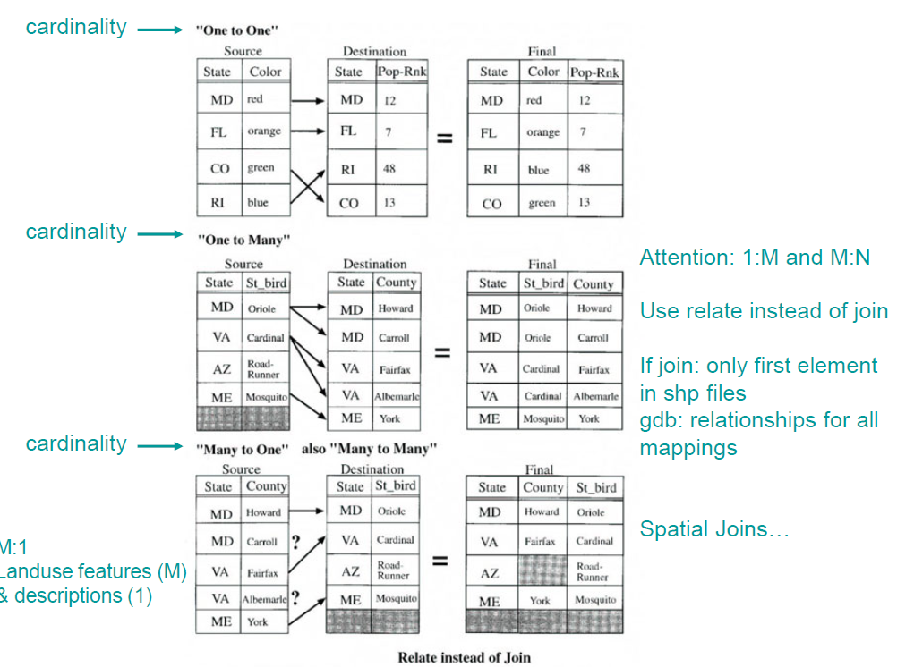

Database Management
This section deals with database management.
Basic Terminology
A database is a collection of data files that is structured, i.e. organized.
A database management system (DBMS) is a specicalized computer program used to organize and manipulate the database with operations such as storing, editing, and retrieving.
Some common DBMS examples are:
- Oracle
- Accesss
- Postgres
DBMS in GIS
Databases in GIS often uses large tables and contain geodatabases, which are a more complex data type.
Like most DBMS, they require maintenance to manage properties and relationships:
- Change
- Add
- Delete
- Must be able to serve different applications with querying
- Management includes protections from corruption and accidental deletion
Logical vs. Physical Structures
Logical Structure
Logical structure refers to the database design, or schema. This is the:
- Logical specification of attributes and relationships
- Conceptual model of items, mapping, cardinality
- Entity-relation diagram / notation (a unified modeling language)
Example: Bolstad’s Forest Trails Database
- Entity sets hold attributes
- Relationships hold mappings (used for joining tables)
- Cardinality is specified, which defines the nature and direction of the relationships
- 1-N
- M-N
- Entity set holds features too
- Important Concepts:
- Cardinality
- Relations
- Joins
- Attribute table is connected to shape files
Always pay attentin to shcema and keys with cardinality matches. Easy way to check if join worked properly, sort and search for duplicates. In a GIS application of a database, slivers could result from bad joins where attributes will be duplicated for all slivers. Be thoughtful on fixing the errors, to be careful on just deleting the polygon slivers.

Physical Structure
Physical structure refers to the actual database implementation, and depends on the intended use of the database requirements:
- Speed access, frequent updates
- Flexible relationships
- Protecting data security
Examples of Physical Strucutres in Database Models
- Flat Files: text files
- Hierarchical: parent-child
- Network: nodes and links
- Relational: tables related via keys
- Hybrid: object-oriented
Hierarchical and network database models have generally been replaced by the relational data model.
Relational Model
Common, flexible, but need to be optimized (or normalized) with:
- Fewer columns
- Fewer joins
- Use relationship classes instead of joins
Terminology
- Table: data orginzed in rows and columns
- Record (rows / tuples): a set of tuples represents logical entities (i.e. road, lake, land use polygon)
- Field (column / item): attribute (property) of the logical entity
- Index / Key: Attribute(s) need to identify, organize, or order records in a database (needed for relational algebra or joins)
Important Considerations
- Field types and domains should be specified as much as possible
- Advantages: minimum structure, easy programming, flexible
- Disadvantages: can be slow due to lack of structure
Relational Keys
Any unique field can be a key, which can span multiple columns.
- Primary Keys: index to a table
- Foreign Keys: index contained in the table that is possibly non-unique, but is a primary key in another table and is used for joins.
With the combination of primary and foreign keys, tables can be joined together.
- Rule: each row holds a unique combination of values, before and after join.
- Ideally, isolate key in as few fields (i.e. columns) as possible.
Constraints
- Rules for implementing tables appear to be fast and loose.
- There are two constraints which allow flexibility yet preserve logic:
- limit the number of legal operations on relational tables (i.e. relational algebra)
- balance the amount of redundancy (normal forms)
Operations (Relational Algebra)
Relational algebra can be summarized in 8 operations which are used to:
- Combine or split tables
- Select rows or columns
- Expand tables (add rows or columns)
The 8 Operators:
- Restrict: select row(s) by attribute
- can be simple or compound
- utilizes logical operators (AND, OR, NOT)
- Project: select specific column(s)
- Product: combine all possible unique rows from two separate tables (cross tabulating)
- Divide: often used in queries with “All” based on a condition
- takes two unique tuples as input, one with the key and one with the conditions
- take another input as the table to perform the per basis
- returns the list of the key(s)
- Union: combine tables and return records found in one or both
- Intersect: combine table to return records found in both
- Difference: return rows in first but not second table - ORDER MATTERS (similar to erase)
- Join: match candidate keys to expand attributes